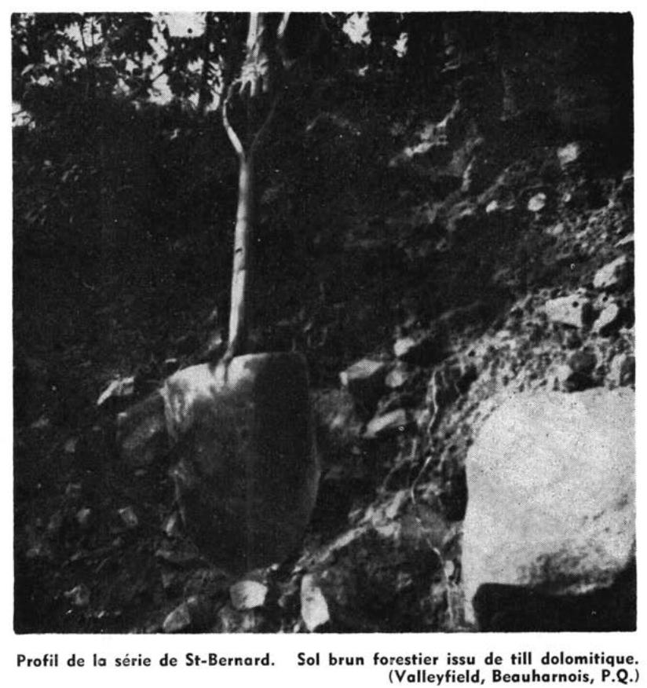
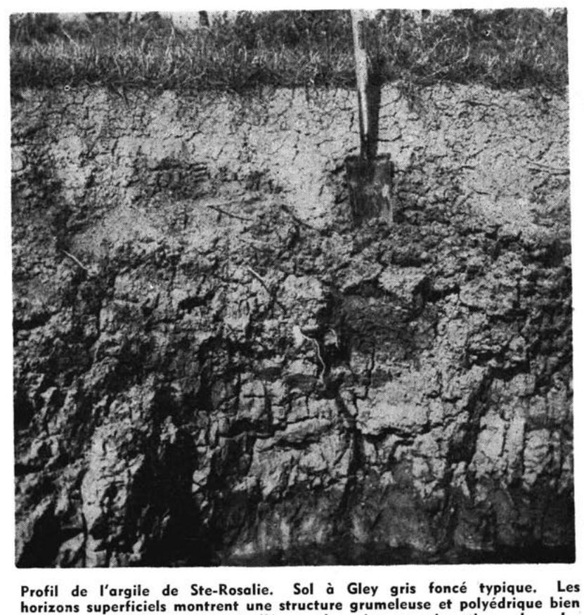
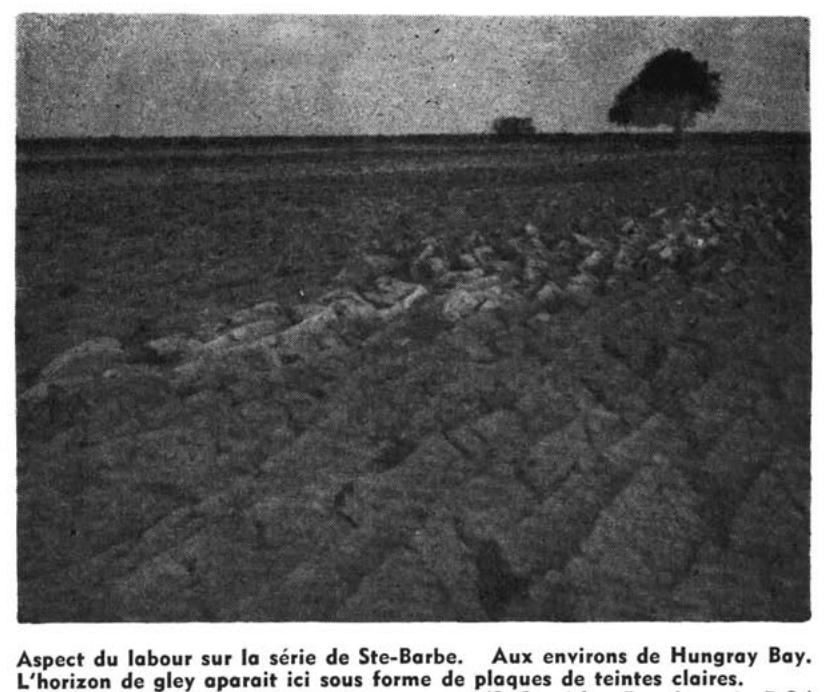

Identification & Caractéristiques Générales
La série Beauharnois s'est développée sur des dépôts meubles d'origine lacustre et marine mis en place au cours de la derniere glaciation et de la phase post-glaciaire de la mer de Champlain, dans la région physiographique de la plaine de Montréal. Le matériau parental est constitué de sédiments fins, principalement des argiles et des limons argileux stratifiés, reposant généralement sur un substrat de till ou directement sur les formations rocheuses paléozoïques locales. Sur le plan géomorphologique, les sols de cette série occupent des secteurs de topographie plane à légèrement ondulée, caractérisés par des pentes faibles à très faibles qui influencent directement le bilan hydrique de surface et la vitesse d'évacuation des eaux de ruissellement.
Le profil pédologique présente une différenciation texturale marquée, caractérisée par un horizon supérieur limoneux ou argilo-limoneux sus-jacent à un sous-sol argileux lourd, dense et plastique. Le drainage naturel de cette série est généralement imperfectif à mauvais, en raison de la faible conductivité hydraulique inhérente aux sédiments argileux profonds et de l'absence de relief prononcé. La perméabilité est lente dans le solum et très lente dans l'horizon C, ce qui favorise l'établissement d'une nappe perchée temporaire lors des périodes de fonte des neiges ou de fortes prècipitations automnales. La structure varie d'une granularité fine en surface à un bloc subangulaire ou prismatique compact en profondeur, avec une réaction du sol généralement neutre à légèrement acide.
Sur le plan agronomique, les sols de la série Beauharnois possèdent un potentiel de fertilité intrinsèque élevé, dicté par une réserve substantielle en éléments nutritifs et une capacité d'échange cationique favorable. Ils sont exploités principalement pour la production de grandes cultures, de cultures fourragères intensives et, dans certains secteurs aménagés, pour des productions maraîchères. Les principales contraintes à la mise en valeur agricole résident dans l'excès d'eau printanier, la battance des horizons de surface limoneux et la sensibilité au compactage sous l'effet de la circulation de la machinerie lourde en conditions humides. L'optimisation de la régie culturale requiert l'installation systématique d'un réseau de drainage souterrain (tuyauterie latérale), l'adjonction de pratiques culturales visant à préserver la structure de la couche arable, ainsi qu'un suivi rigoureux du pH par des apports de chaulage adaptés.
Classification Taxonomique & Environnement Pédologique
| Ordre Pédologique | Gleysolique |
|---|---|
| Grand Groupe (SCSS) | Gleysol humique |
| Sous-Groupe Taxonomique | Gleysol humique orthique |
| Famille Pédologique | Argileuse-fine, mixte argileux, alcalin (calcaire) |
| Mode de Dépôt Parental | Fluviatile sur morainique |
| Classe de Drainage Naturel | Mal drainé |
| Régime Thermique & Humidité | Doux / Perhumide |
Description Morphologique du Profil Type
Séquences génétiques des horizons pédologiques caractérisant le profil type représentatif de la série Beauharnois :
Profil naturel (vierge) — Comté de Huntingdon
✓ Source : Comté de Huntingdon — Page 164Couleur Munsell : Non précisée
Structure & Consistance : Polyédrique à granulaire
Description morphologique : Litière de feuilles mortes et de débris végétaux en voie de décomposition.
Couleur Munsell : Non précisée
Structure & Consistance : Mietteuse
Description morphologique : Limon sableux fin, noir, structure mietteuse, friable (mor). pH: 5.5.
Couleur Munsell : 10YR 6/2
Structure & Consistance : Particulaire
Description morphologique : Limon sableux à sable fin, gris brun clair (10YR 6/2) avec fines rayures plus brunes à la base, structure particulaire, friable, cendreux. Cette couche s'identifie graduellement avec l'argile sous-jacente. pH: 5.7.
Couleur Munsell : 7.5YR 4/2, 10YR 4/2, 2.5Y 6/2, 10YR 5/6
Structure & Consistance : Polyédrique à granulaire
Description morphologique : Argile brune (7.5YR 4/2) à brun gris foncé, (10YR 4/2) passant vers la base au gris brun clair (2.5Y 6/2), parsemé de taches brun jaune (10YR 5/6). Assez massif et tenace. pH: 6.4.
Couleur Munsell : 2.5Y 5/2
Structure & Consistance : Polyédrique à granulaire
Description morphologique : Argile brun gris (2.5Y 5/2), à tendance prismatique, se débite en fragments cuboïdes, assez friables. pH: 7.4.
Profil représentatif — Comté de Huntingdon
✓ Source : Comté de Huntingdon — Page 165Couleur Munsell : Non précisée
Structure & Consistance : Polyédrique à granulaire
Description morphologique : Litière de feuilles mortes et de débris végétaux.
Couleur Munsell : Non précisée
Structure & Consistance : Mietteuse faiblement développée
Description morphologique : Sable limoneux noir; structure mietteuse faiblement développée, poreux, friable.
Couleur Munsell : Non précisée
Structure & Consistance : Polyédrique à granulaire
Description morphologique : Sable blanc à gris blanc.
Couleur Munsell : 10YR 6/2
Structure & Consistance : Particulaire
Description morphologique : Sable limoneux jaune brun (10YR 6/2) avec mouchetures de rouille, mais peu abondantes, structure particulaire.
Couleur Munsell : Non précisée
Structure & Consistance : Assez massive
Description morphologique : Argile brune à rouge brun (7.5 5/6 à 5/8) avec mouchetures de rouille, structure assez massive, plastique.
Couleur Munsell : 5Y 5/2
Structure & Consistance : Polyédrique à granulaire
Description morphologique : Argile gris olive (5Y 5/2) avec taches brunes, plastique.
Profils Photographiques & Planches de Terrain
Documents iconographiques, figures pédologiques et coupes de terrain documentées dans les mémoires d'inventaire pour de la série Beauharnois :





Propriétés Physico-Chimiques & Analyses de Laboratoire
| Horizon | Prof. limite | pH (H₂O) | M.O. % | C tot. % | N tot. % | C.E.C. (cmol/kg) | Sable % | Limon % | Argile % | P Meh3 (mg/kg) | K (cmol/kg) | Ca (cmol/kg) | MVA (g/cm³) |
|---|---|---|---|---|---|---|---|---|---|---|---|---|---|
| Ap1 | 13.0 cm | 6.83 | 3.59 | 2.08 | 0.17 | 22.6 | 36.9 | 32.4 | 30.7 | 46.3 | 0.25 | 14.14 | 1.49 |
| Ap2 | 32.0 cm | 6.99 | 2.9 | 1.68 | 0.13 | 22.4 | 36.0 | 33.0 | 31.0 | 28.5 | 0.2 | 14.45 | 1.6 |
| B | — | 7.47 | 1.72 | 1.0 | 0.07 | 24.2 | 33.0 | 35.6 | 31.4 | 5.3 | 0.16 | 17.69 | 1.67 |
Particularités Régionales, Phases & Variantes Pédologiques
Déclinaisons régionales, faciès texturaux, phases d'érosion ou de pierrosité et variantes cartographiées par étude pour de la série Beauharnois :
| Étude Régionale | Symbole | Appellation / Phase / Variante | Différenciation avec la série type (Analyse pédologique) |
|---|---|---|---|
| Comté de Huntingdon | B |
Beauharnois sable | Modalité modale de référence (type de base de la série). |
| Comté de Chambly | SB3 |
Saint-Blaise loam | Faciès loameux plus fin et équilibré que le sable de référence (meilleure rétention en eau et nutriments); Drainage mal drainé (distinct du drainage de référence imparfaitement drainé). |
SB3h |
Saint-Blaise loam humifère | Phase humifère enrichie en matière organique superficielle; Faciès loameux plus fin et équilibré que le sable de référence (meilleure rétention en eau et nutriments); Drainage mal drainé (distinct du drainage de référence imparfaitement drainé). | |
SB4 |
Saint-Blaise loam limono-argileux | Faciès argileux plus lourd et compact que le sable de référence; Drainage mal drainé (distinct du drainage de référence imparfaitement drainé). | |
SB4b |
Saint-Blaise loam limono-argileux 3-8 % de pente | Faciès argileux plus lourd et compact que le sable de référence; Drainage mal drainé (distinct du drainage de référence imparfaitement drainé). | |
SB4m |
Saint-Blaise loam limono-argileux mince | Phase mince sur substrat rocheux (< 50 cm); Faciès argileux plus lourd et compact que le sable de référence; Drainage mal drainé (distinct du drainage de référence imparfaitement drainé). | |
SB4p |
Saint-Blaise loam argileux pierreux | Phase pierreuse (abondance de cailloux et blocs en surface); Faciès argileux plus lourd et compact que le sable de référence; Drainage mal drainé (distinct du drainage de référence imparfaitement drainé). | |
SB5 |
Saint-Blaise argile limoneuse | Faciès argileux plus lourd et compact que le sable de référence; Drainage mal drainé (distinct du drainage de référence imparfaitement drainé). | |
SBa3 |
Saint-Blaise variante non calcaire loam | Variante décarbonatée (non calcaire) à réaction plus acide; Faciès loameux plus fin et équilibré que le sable de référence (meilleure rétention en eau et nutriments); Drainage mal drainé (distinct du drainage de référence imparfaitement drainé). | |
SBa4 |
Saint-Blaise variante non calcaire loam limono-argileux | Variante décarbonatée (non calcaire) à réaction plus acide; Faciès argileux plus lourd et compact que le sable de référence; Drainage mal drainé (distinct du drainage de référence imparfaitement drainé). | |
| Comté de Châteauguay | B |
Saint-Blaise loam argileux | Faciès argileux plus lourd et compact que le sable de référence; Drainage mal drainé (distinct du drainage de référence imparfaitement drainé). |
| Comté de Iberville | SB |
Saint-Blaise argileux sur till loameux fin alcalin | Phase peu profonde sur till; Faciès argileux plus lourd et compact que le sable de référence; Drainage mal drainé (distinct du drainage de référence imparfaitement drainé). |
| Comté de Laprairie | SB3 |
Saint-Blaise loam | Faciès loameux plus fin et équilibré que le sable de référence (meilleure rétention en eau et nutriments); Drainage mal drainé (distinct du drainage de référence imparfaitement drainé). |
SB3h |
Saint-Blaise loam humifère | Phase humifère enrichie en matière organique superficielle; Faciès loameux plus fin et équilibré que le sable de référence (meilleure rétention en eau et nutriments); Drainage mal drainé (distinct du drainage de référence imparfaitement drainé). | |
SB3p |
Saint-Blaise loam légèrement à modérément pierreux | Phase légèrement à modérément pierreuse (obstruction mécanique modérée); Faciès loameux plus fin et équilibré que le sable de référence (meilleure rétention en eau et nutriments); Drainage mal drainé (distinct du drainage de référence imparfaitement drainé). | |
SB4 |
Saint-Blaise loam limono-argileux | Faciès argileux plus lourd et compact que le sable de référence; Drainage mal drainé (distinct du drainage de référence imparfaitement drainé). | |
SB4p |
Saint-Blaise loam argileux légèrement à modérément pierreux | Phase légèrement à modérément pierreuse (obstruction mécanique modérée); Faciès argileux plus lourd et compact que le sable de référence; Drainage mal drainé (distinct du drainage de référence imparfaitement drainé). | |
SB5 |
Saint-Blaise argile limoneuse | Faciès argileux plus lourd et compact que le sable de référence; Drainage mal drainé (distinct du drainage de référence imparfaitement drainé). | |
| Les sols de l’Île de Montréal | Bl |
Saint-Blaise loam | Faciès loameux plus fin et équilibré que le sable de référence (meilleure rétention en eau et nutriments); Drainage mal drainé (distinct du drainage de référence imparfaitement drainé). |
Bl-a |
Saint-Blaise argile mince | Phase mince sur substrat rocheux (< 50 cm); Faciès argileux plus lourd et compact que le sable de référence; Drainage mal drainé (distinct du drainage de référence imparfaitement drainé). | |
| Comté de Napierville | SB |
Saint-Blaise | Drainage mal drainé (distinct du drainage de référence imparfaitement drainé). |
SBh |
Saint-Blaise humifère | Phase humifère enrichie en matière organique superficielle; Drainage mal drainé (distinct du drainage de référence imparfaitement drainé). | |
| Comté de Rouville | SB3 |
Saint-Blaise loam | Faciès loameux plus fin et équilibré que le sable de référence (meilleure rétention en eau et nutriments); Drainage mal drainé (distinct du drainage de référence imparfaitement drainé). |
SB4 |
Saint-Blaise loam limono-argileux | Faciès argileux plus lourd et compact que le sable de référence; Drainage mal drainé (distinct du drainage de référence imparfaitement drainé). | |
SB4p |
Saint-Blaise loam limono-argileux légèrement à modérément pierreux | Phase légèrement à modérément pierreuse (obstruction mécanique modérée); Faciès argileux plus lourd et compact que le sable de référence; Drainage mal drainé (distinct du drainage de référence imparfaitement drainé). | |
| Comté de Saint-jean | SB |
Saint-Blaise loam | Faciès loameux plus fin et équilibré que le sable de référence (meilleure rétention en eau et nutriments); Drainage mal drainé (distinct du drainage de référence imparfaitement drainé). |
SBbp |
Saint-Blaise loam 3-8% de pente légèrement à modérément pierreux | Phase légèrement à modérément pierreuse (obstruction mécanique modérée); Faciès loameux plus fin et équilibré que le sable de référence (meilleure rétention en eau et nutriments); Drainage mal drainé (distinct du drainage de référence imparfaitement drainé). | |
| Comté de Verchères | SB4 |
Saint-Blaise loam limono-argileux | Faciès argileux plus lourd et compact que le sable de référence; Drainage mal drainé (distinct du drainage de référence imparfaitement drainé). |
SB5 |
Saint-Blaise argile limoneuse | Faciès argileux plus lourd et compact que le sable de référence; Drainage mal drainé (distinct du drainage de référence imparfaitement drainé). | |
SB5m |
Saint-Blaise argile limoneuse mince | Phase mince sur substrat rocheux (< 50 cm); Faciès argileux plus lourd et compact que le sable de référence; Drainage mal drainé (distinct du drainage de référence imparfaitement drainé). | |
| Sols de l'île de Montréal | SAB |
Beauharnois | Drainage mal drainé (distinct du drainage de référence imparfaitement drainé). |
| Comté de St-jean | SAB |
Beauharnois | Drainage mal drainé (distinct du drainage de référence imparfaitement drainé). |
Distribution Pédo-Paysagère & Représentativité Cartographique (Couverture PPS 2026)
- Boucherville loam (BCL) — co-occurrente dans 148 polygone(s)
- Laprairie loam (LPR) — co-occurrente dans 65 polygone(s)
- Chambly loam humifère (CHY) — co-occurrente dans 32 polygone(s)
Aptitudes Agronomiques, Hydropédologie & Conservation des Sols
Indicateurs Hydropédologiques & Vulnérabilité à l'Érosion (BDHP 2026)
Interprétation BDHP : Potentiel de ruissellement modérément élevé. Faible taux d'infiltration, présence d'horizons ralentissant le drainage descendant.
Classement selon l'Inventaire des Terres du Canada (ITC / CLI) : Classe 2w.
- Potentiel agricole : Terroir adapté aux cultures régionales selon la texture dominante et la régie de drainage.
- Contraintes majeures : Mal drainé. Risque d'engorgement temporaire ou d'excès d'eau printanier.
- Gestion & Aménagement : Drainage souterrain ou superficiel préconisé sur les terres planes. Chaulage et apport organique régulier selon les bilans agronomiques.
- Cultures adaptées : Grandes cultures (maïs, soya, céréales), prairies fourragères et cultures maraîchères selon le contexte géomorphologique.